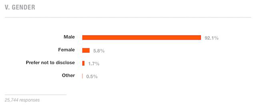

Where are all the women?
Addressing gender inequalities and sexism in tech
Today is April 10, 2015. That's right, the year is two thousand and fifteen and gender inequality in the tech industry is still a "hot" topic instead of a resolved issue. The imbalance is obvious with just a quick glance at the 2015 survey results from Stack Overflow, which shows the number of male vs. female developers.

Photo Courtesy of Stack Overflow
Some people might think maybe women just aren't interested in tech and the solution is to encourage them to explore it. However, based on a Harvard Business Review study, 41% of those studying science, engineering, and/or technology are women but 52% of that population drops out. In addition, 63% have experienced sexual harassment. So, it's not that women aren't interested or aren't qualified for positions in this field. It's actually quite the opposite - women are leaving the tech industry as a result of unfair treatment based on their gender. However, keep in mind that unfair treatment doesn't just refer to sexual harassment but also career advancement. Women are finding it harder to achieve raises and/or promotions due to favoritism of their male colleagues. As a result, they are choosing to leave likely because they are tired of the uphill battle. If you weren't getting a fair chance to grow your career, wouldn't you be fed up too and ultimately look towards a different path that will allow you to succeed?
As a woman learning to program and trying to navigate my way into this field, I see many red flags sprouting in my mind as I hear more and more about women leaving it. However, there are definitely a plethora of ways we can solve this problem. The first step is education. Tech companies need to make it a priority to educate their employees on gender inequality and sexism. This idea may seem silly because, well, doesn't everybody know what those topics mean and doesn't everybody understand what's appropriate behavior? It's hard to believe (even for myself) but the answer is no. Take a look at Quartz author Cate Burlington's post "Actual words my coworkers have said to me, a woman in tech" for some examples of outright sexist comments made towards a woman.. at work. As you can see, there are many individuals who are ignorant of how their actions and comments can be sexist (or they just don't care they're offending women).
Here is an example of a common habit a majority of us probably say without realizing it's sexist. We often come up to our friends and say "Hey guys!" or "What are you guys doing?" whether the group is all guys, all girls, or a mix of guys and girls. The greeting may seem harmless, but in college I learned using "guys" is offensive to some girls for the simple reason that they are in fact not guys. Most individuals probably didn't even realize they were offending their peers, but by educating them to swap "guys" for a more gender-neutral term, such as "everyone," can make all the difference. While education on gender inequality and sexisum against women in the tech industry involves more layers than the "hey guys" example, it can make people more conscious of their unconscious tendencies. It will also show that type of behavior and unfair treatment is not tolerated by the company. Education is an actionable step towards promoting equality among all persons in the tech industry, yet it would only be one of many to eradicate it from this field entirely.